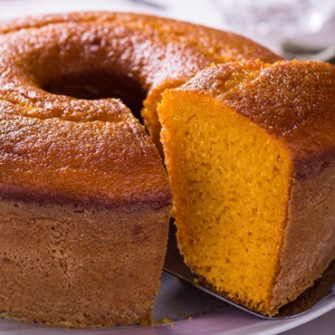
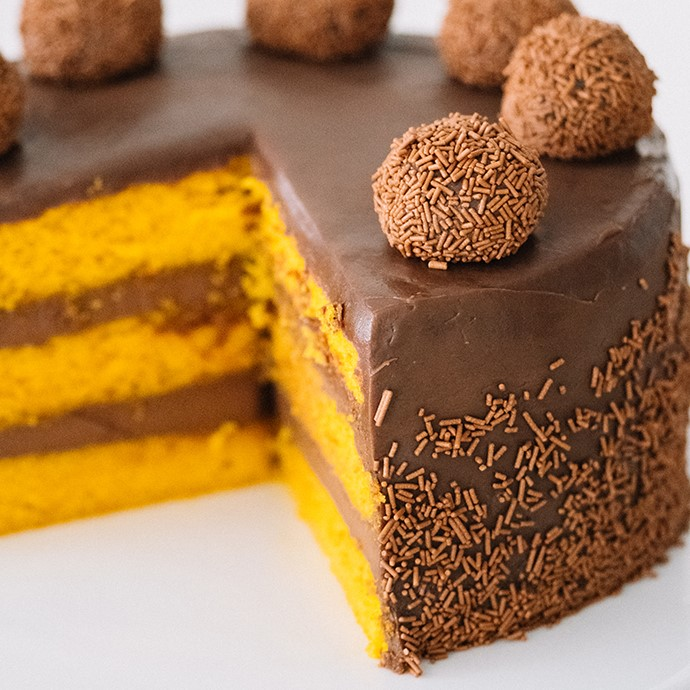

Ingredientes
- 1/2 xícara (chá) de óleo
- 3 cenouras médias raladas
- 4 ovos
- 2 xícaras (chá) de açúcar
- 2 e 1/2 xícaras (chá) de farinha de trigo
- 1 colher (sopa) de fermento em pó
Modo de Preparo
- Em um liquidificador, adicione a cenoura, os ovos e o óleo, depois misture.
- Acrescente o açúcar e bata novamente por 5 minutos.
- Em uma tigela ou na batedeira, adicione a farinha de trigo e depois misture novamente.
- Acrescente o fermento e misture lentamente com uma colher.
- Asse em um forno preaquecido a 180° C por aproximadamente 40 minutos.
- Use brigadeiro como cobertura e sirva.
BOLO DE CENOURA
Esse bolo surgiu a partir de receitas de pudins de cenoura da época medieval. No período, o açúcar era caro e escasso, então o vegetal substituía o ingrediente adocicado.


Você sabia que: Atualmente, os norte-americanos têm o costume de servir o bolo de cenoura com cobertura de cream cheese?

